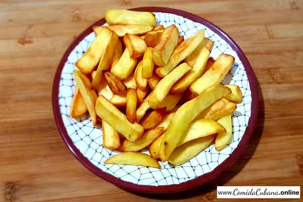

Receta de papas fritas

Hoy vamos a ver como preparar papas fritas y para eso necesitaremos los siguientes ingredientes
- Ingredientes
- 3 o 4 papas(300gramos).
- Aceite.
- Sal.
- Preparacion (paso a paso).
- Pelar las papas.
- Cortar las papas en tiritas de baston.
- Calentar aceite en un sarten.
- Cocinar las papas hasta que esten doradas.
- Remover las papas (Si quieres puedes condimentarlas con sal).